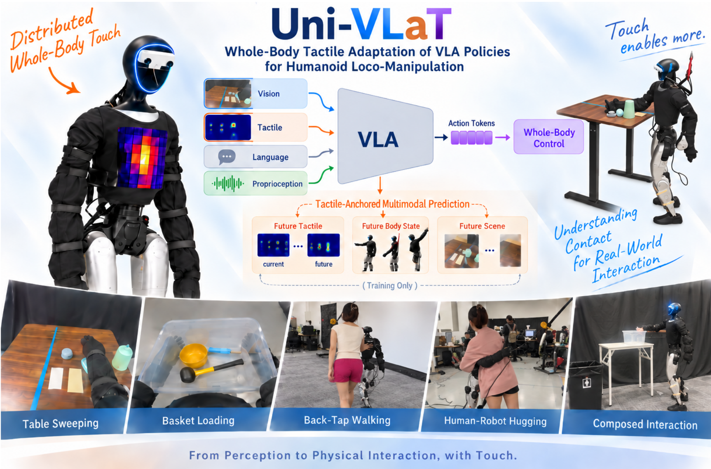
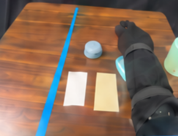
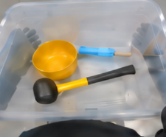
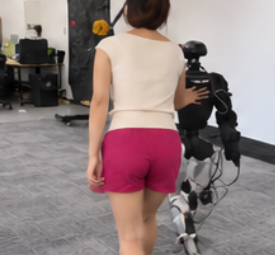
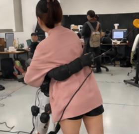
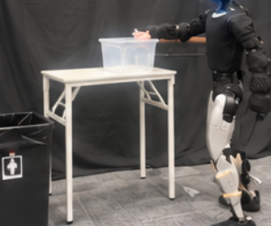
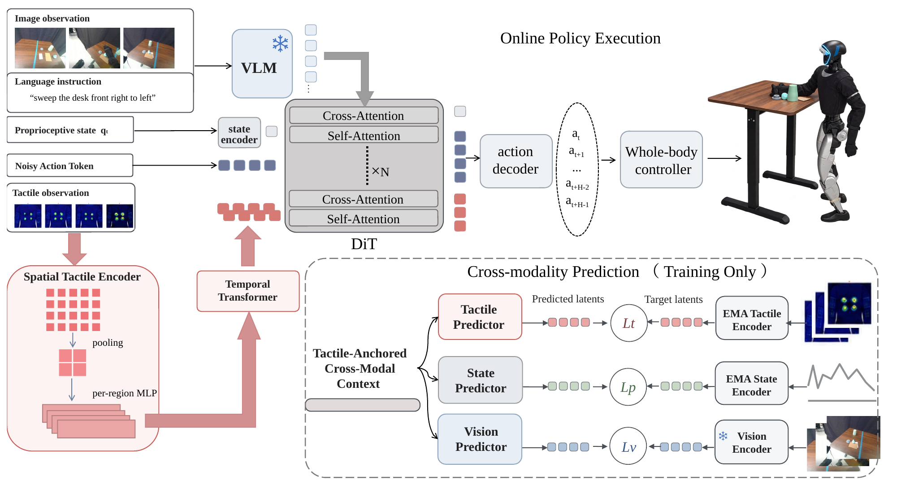

Uni-VLaT

Uni-VLaT adapts pretrained VLA policies with whole-body tactile sensing and training-time prediction of future tactile, proprioceptive, and visual representations.
Abstract.
Real-world Demo.





Whole-body interaction: Table sweeping, box holding, back-tap walking, human–robot hugging, and composed cleanup. These are still images from the paper; demonstration videos are pending.
Table Sweeping: Sweep all five objects from the right half of a table to the left, with table height varying across rollouts.
Box Holding: Support a box as a person adds four objects, then allow the person to take the box away.
Back-Tap Walking: Respond to a tap on the back by walking forward to a designated destination.
Human–Robot Hugging: Complete an encircling motion with gentle contact, with participants of different body sizes.
Composed Cleanup: Sweep rubbish into a box, lift and carry the box, then deposit the box and its contents into a waste bin.
Approach.

Spatial and temporal tactile tokens interact with visual, language, proprioceptive, and action features inside the pretrained policy. The contextualized tactile tokens provide a shared context for predicting future physical interaction across modalities.
1. Tactile Adaptation.
Distributed tactile sensors cover eight body regions: the chest, central back, left and right shoulders, left and right upper back, and left and right arms. Regional encoders preserve where contact occurs. Axial pooling reduces sensitivity to sleeve rotation while retaining contact location along the arm.
A lightweight temporal Transformer aggregates four causal tactile frames. The resulting tactile tokens join proprioceptive and action tokens in the DiT trunk, with visual and language features supplied through cross-attention.
2. Multimodal Prediction.
After multimodal policy attention, the tactile tokens are pooled into a tactile-anchored cross-modal context. Three modality-specific predictors estimate four future steps of tactile, proprioceptive, and visual representations in their respective latent spaces.
The action-learning objective and predictive losses jointly train the policy. At deployment, the predictive heads and target encoders are omitted. The policy generates chunks of 64-dimensional motion tokens for the SONIC whole-body controller.
Results.
| Task | No Tactile | Tactile Input | HTD Prediction* | Uni-VLaT |
|---|---|---|---|---|
| Back-Tap Walking | 0 | 90 | 90 | 90 |
| Table Sweeping | 50 | 60 | 60 | 70 |
| Basket Loading* | 30 | 60 | 70 | 80 |
| Human–Robot Hugging | 30 | 60 | — | — |
| Composed Cleanup | 30 | 50 | 50 | 50 |
Table 1: Task success rate (%) from the supplied draft. A dash denotes an unavailable result. “Basket Loading” and “HTD Prediction” reproduce the table labels; the manuscript prose uses “Box Holding” and “Tactile Prediction.”
The draft also describes comparisons across Isaac-GR00T, π0.5, and DiT4DiT, alongside ablations of spatial pooling, predictive context, and latent targets. These measurements and the contact-dynamics analysis are pending.
@misc{univlat2026,
title = {Uni-VLaT: Whole-Body Tactile Adaptation of VLA Policies
for Humanoid Loco-Manipulation},
author = {Anonymous Authors},
year = {2026},
note = {Manuscript draft}
}